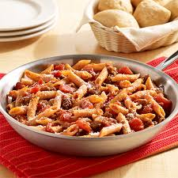

My Favorite Food
Italian Pasta Skillet
This is the best healthy pasta you'll ever taste

InGredients
- Pam Vegetable Cooking Spray 6oz
- Jennie-o Hot Italian, Lean, Turkey Sausage, 12ct
- Hunts No Salt Added Tomato Sauce, 15oz
- Barilla Fully Cooked Ready Pasta, 8.5 OZ
- C & W Choped Baby Spinach, 16 OZ
- Lucerne Cheese Shredded Mozzerella Low Moisture Part Skim, 8 oz
Directions
- 1. Heat large skillet over medium-high heat. Add sausage; cook 5 minutes, breaking apart with spoon to crumble. Drain; return to skillet.
- 2. Add water, undrained tomatoes, tomato sauce and pasta to skillet; stir to combine. Bring to a boil. Cover; reduce heat and cook 15 minutes or until pasta is tender.
- 3.prinkle with Parmesan cheese. Serve with additional Parmesan cheese, if desired.
Tips
Serve Alexia Artisan Ciabatta Rolls, prepared according to package directions, with the pasta dish.
For more information Click Here